Chapter 6 グラフ
データをグラフで表現する方法について学ぶ。
- グラフの種類
- グラフの作り方
データの傾向をグラフによって表現することを可視化と表現する。
ggplot2パッケージを使って，データの可視化をする。
ggplot2はtidyverseパッケージに含まれているので，tidyverseパッケージをロードする。
6.1 Rのグラフィック
Rの利点としてデータのグラフィックに優れている点をあげることができる。
Rの数あるパッケージの中でも，ggplot2()はグラフを作るのに特化された関数を含むパッケージである。
以下では，Rのサンプルデータを使いながら，データを可視化するすべを学んでいく。
6.2 ggplot2の基本
ggplot2は，一つ一つのレイヤー（パーツ）を作り，重ね合わせてグラフを作成する。
p = ggplot() +
geom_point(data = iris, aes(x=Sepal.Length, y=Petal.Length)) +
labs(x = "Length of sepal", y = "Length of petal")
pプログラムの解説：
- ggplot()：初期設定。「ggplot2を使ってグラフを書きますよ」という意味。必ず書く。カッコの中には何も入れなくて良い。
- geom_xxxx()：グラフの種類の指定。必ず書く。xxxxには，グラフの種類を入力する。この例では，散布図を書くのでgeom_pointを指定した。更に，カッコの中に必要な設定を記す。
- data: グラフを描画するデータを指定する。
- x, y: x軸とy軸に指定したい変数を指定する。
- その他にも，グラフの種類によって指定できるものがある。
- オプション：例えば，軸の値の範囲，軸のラベル，グラフの色の設定などを指定することができる。オプションは必ずしも書く必要はない。
6.2.1 散布図
geom_pointで作成できる。

重なって見えにくい場合は，geom_jitterを使うとランダムのズレをつくって表示してくれる。
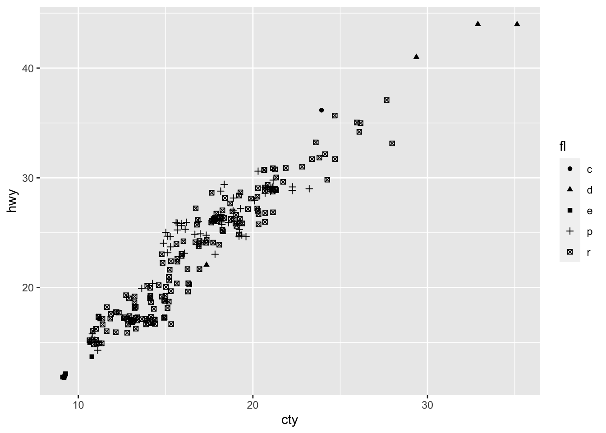
6.2.2 ヒストグラム
geom_histogramで作成する。
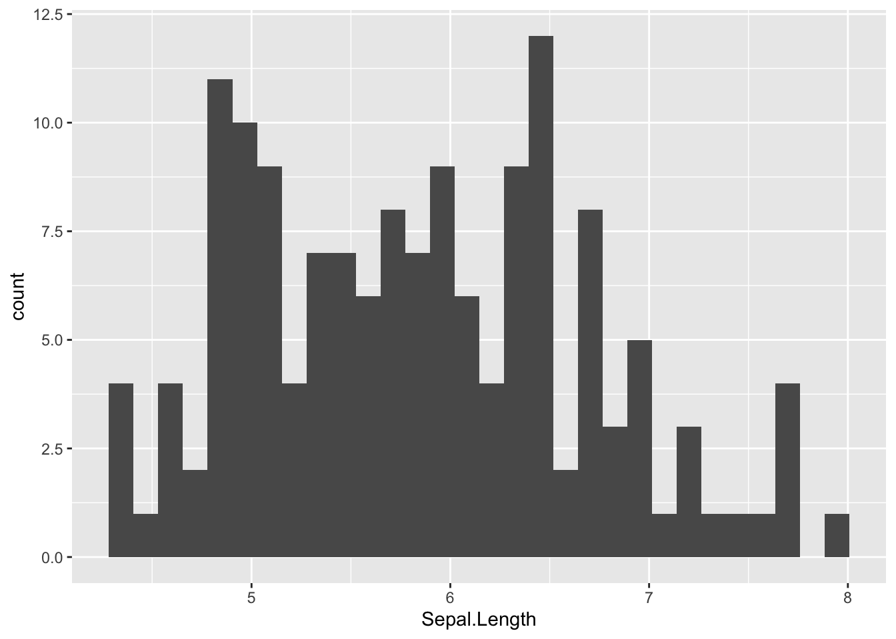
p = ggplot() +
geom_histogram(data = iris, aes(x=Sepal.Length, fill = Species)) #種類ごとに色の塗りつぶしを変えたい場合は，fillに指定する。
p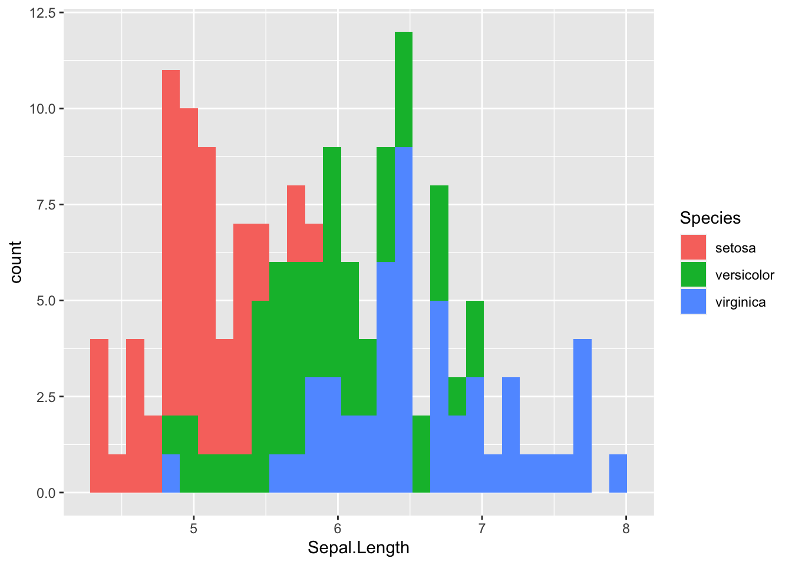
p = ggplot() +
geom_histogram(data = iris, aes(x=Sepal.Length, color = Species)) #colorだと周りの線の色を変える。
p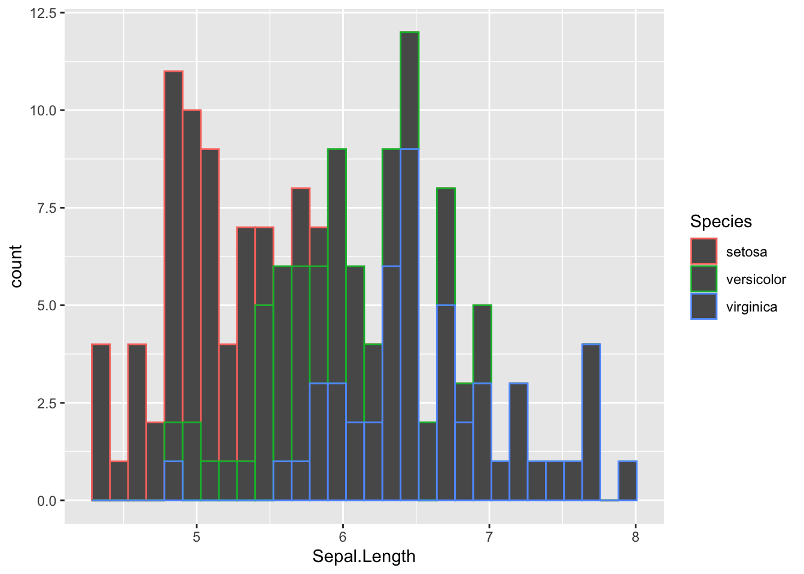
6.2.3 箱ひげ図
geom_boxplotで作成する。
最小値，第一分位点，中央値，第三分位点，最大値を示す（外れ値は点で示される）。
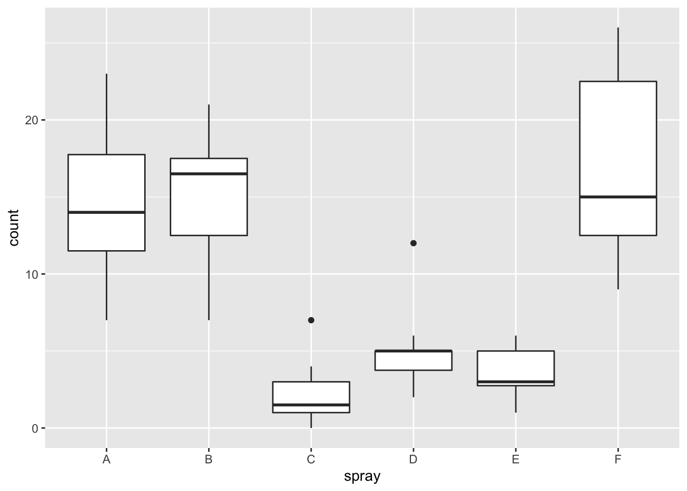
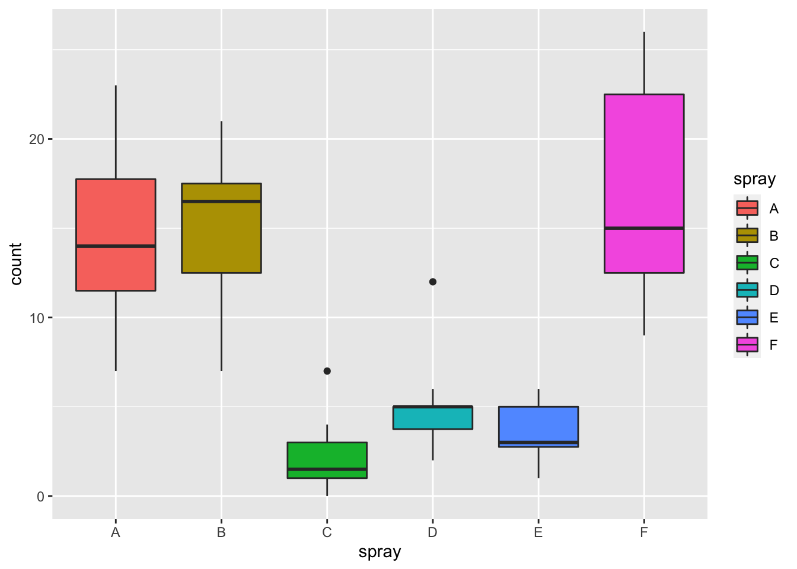
6.2.4 バイオリンプロット
データの分布を表現したグラフ。
geom_violinで作成する。
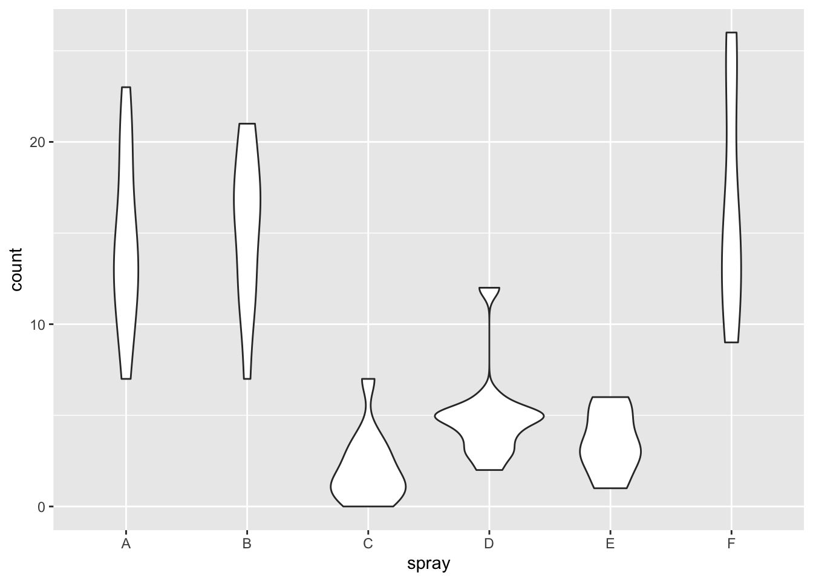
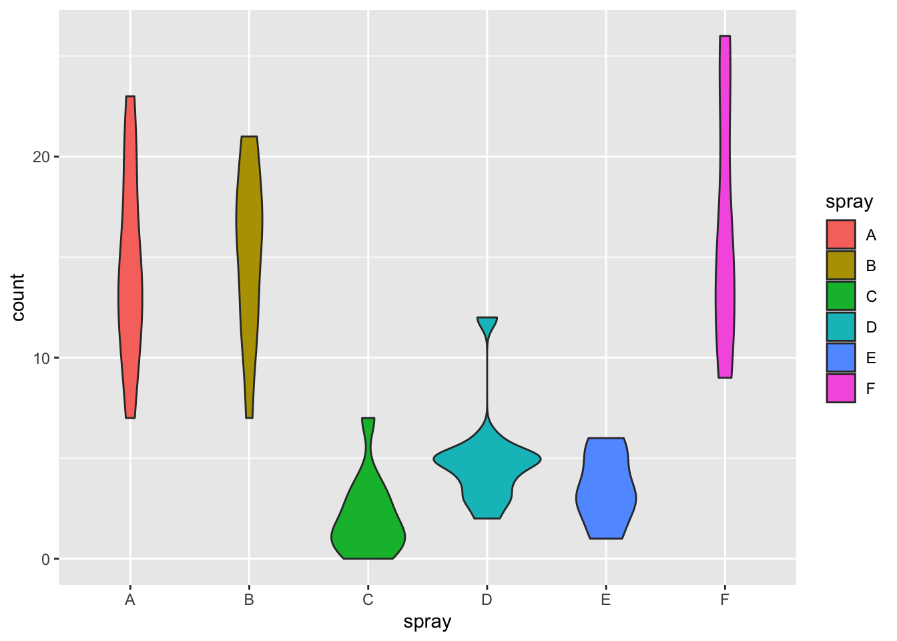
6.2.5 折れ線グラフ
geom_line()を使う。geom_line()だけだと線のみだが，geom_point()で作ったグラフを重ねることで点もつけることができる。
#サンプルデータをつくる: 10日間の気温の変化
temperature = data.frame(
Days = 1:10,
Celsius = c(17.2, 17.5, 18.1, 18.8, 19.0, 19.2, 19.7, 20.2, 20.5, 20.1)
)
temperature## Days Celsius
## 1 1 17.2
## 2 2 17.5
## 3 3 18.1
## 4 4 18.8
## 5 5 19.0
## 6 6 19.2
## 7 7 19.7
## 8 8 20.2
## 9 9 20.5
## 10 10 20.1p = ggplot() +
geom_line(data = temperature, aes(x=Days, y=Celsius)) +
geom_point(data = temperature, aes(x=Days, y=Celsius))
p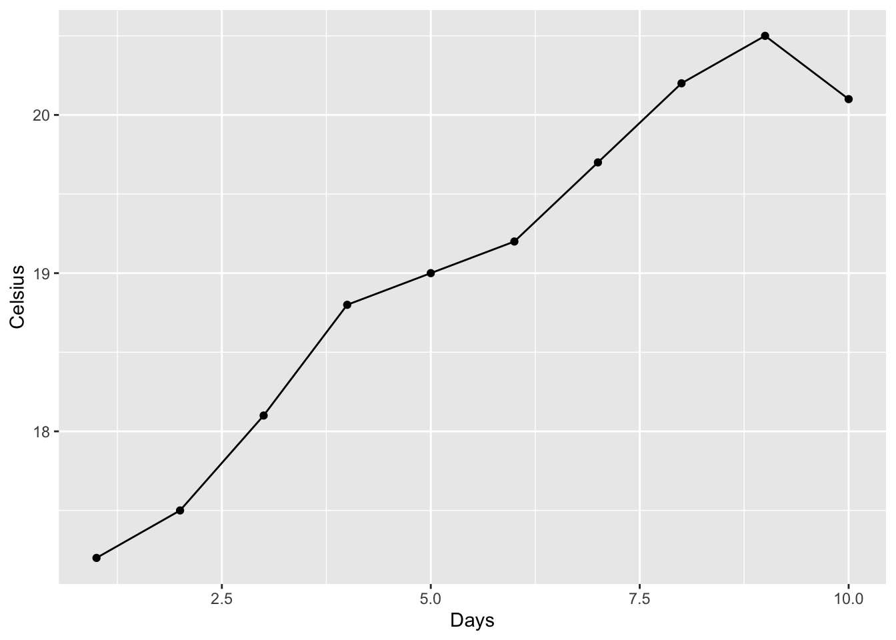
6.2.6 エラーバーつきのグラフ
geom_errorbar()でエラーバーをつけることができる。
あるいは，geom_pointrange()でも作れる。
#サンプルデータをつくる
sample_dat = data.frame(Condition=c("A", "B" ,"C"),
mean=c(2, 5, 8),
lower=c(1.1, 4.2, 7.5),
upper=c(3.0, 6.8, 9.1))
#meanが平均，lowerとupperにそれぞれ下限値と上限値。
p = ggplot() +
geom_point(data = sample_dat, aes(x = Condition, y = mean)) +
geom_errorbar(data = sample_dat, aes(x = Condition, ymax = upper, ymin = lower), width = 0.1)
#まず，geom_pointで平均を点で示したグラフを作成する。そのグラフに，ymaxとyminにそれぞれ上限値と下限値を指定したエラーバーのグラフを重ねる（widthでエラーバーの横の長さを指定できる）。
p6.3 ファセット（Facet）
グループごとにグラフを分けたい場合は，ファセット（facet）を利用すると良い。facet_wrap()を使う。
p = ggplot() +
geom_point(data = iris, aes(x=Sepal.Length, y=Petal.Length)) + facet_wrap(vars(Species))
p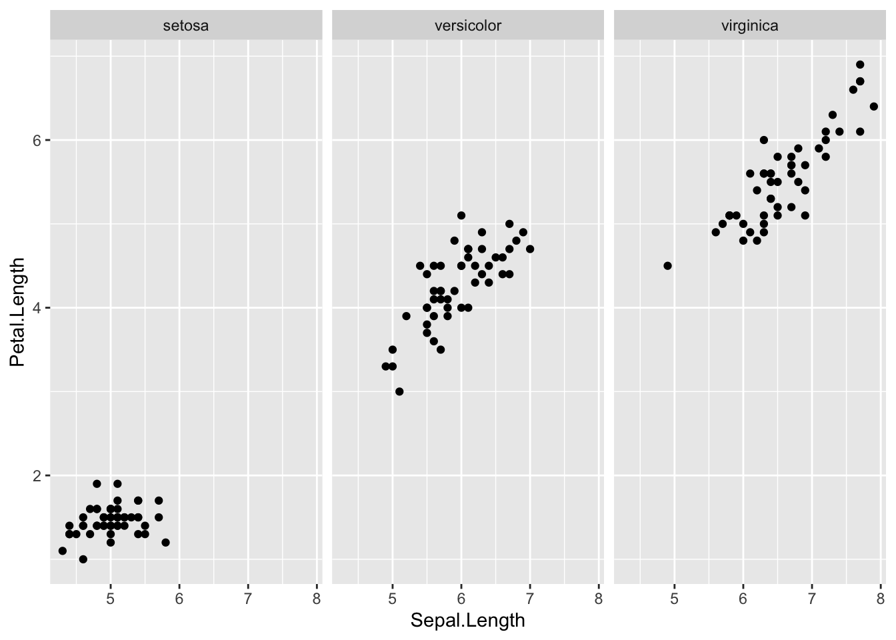
6.4 ラベル
x軸やy軸のラベルを変えたいときは，labsを使うと良い。
6.5 テーマ（Theme）
グループのテーマを変えることができる。
手っ取り早く変えたい場合は，用意されているテーマを選ぶと良い。
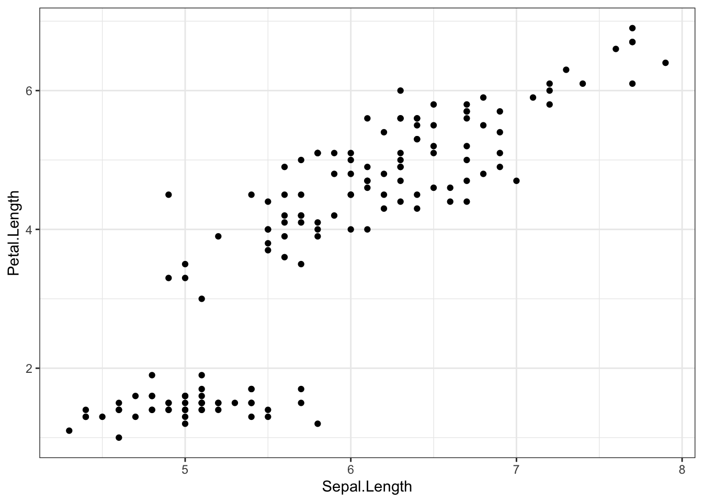
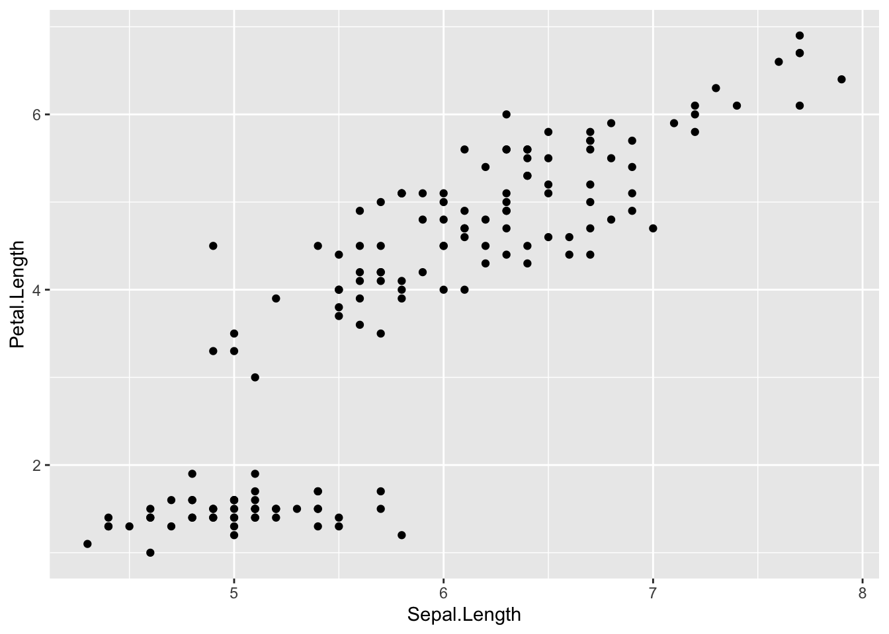
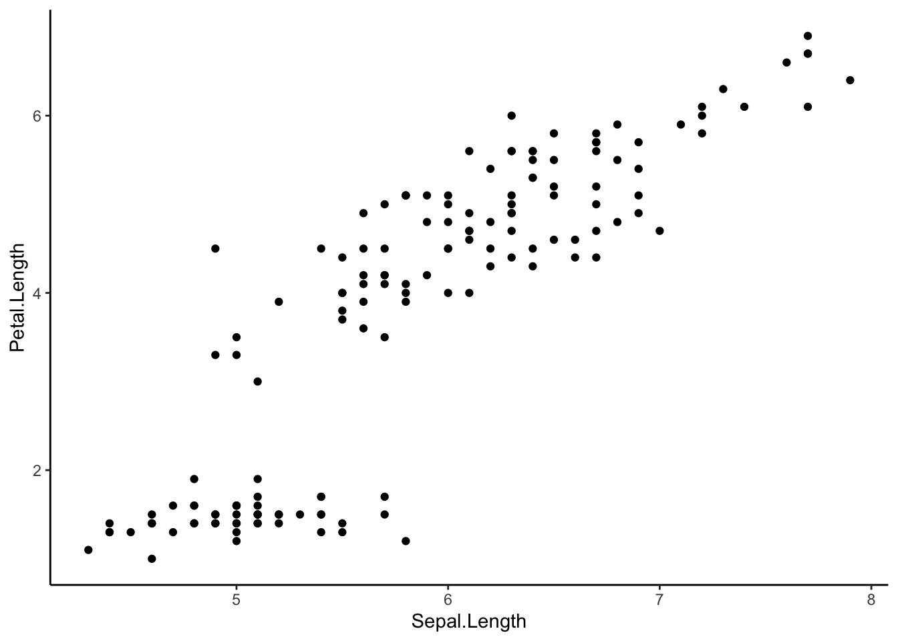
6.6 図の保存
ggsave()を使う。plotに保存した図を，filenameにファイル名を指定すると，ワーキングディレクトリに作成した図が保存される。
p = ggplot() +
geom_point(data = iris, aes(x=Sepal.Length, y=Petal.Length)) +
labs(x = "Sepal Length", y = "Petal Length") +
theme_bw()
p
ggsave(plot = p, filename = "plot.png")
ggsave(plot = p, filename = "plot_2.png", dpi = 300) #解像度（dpi）を指定可能。
ggsave(plot = p, filename = "plot_3.png", width = 8, height = 5) #幅(width)や高さ(height)を指定可能。6.7 その他の機能
ggplot2のCheat sheetを見てみよう。